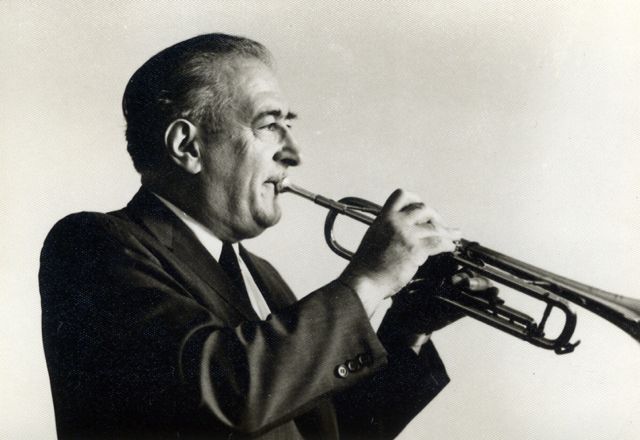

“There was hardly a working day when I didn’t think about him and something he taught me.”
Thomas Stevens — Former Principal Trumpet, Los Angeles Philharmonic
Vacchiano’s teaching career spanned seven decades as an instructor at The Juilliard School (1935–2002), Manhattan School of Music (1937–1999), Mannes College of Music (1937–1983), Queens College (1970–1973, 1991–1994), North Carolina School of the Arts (1973–1976), and Columbia Teachers College. In addition to his tenure at these renowned music schools, he instructed many students at his home in Flushing, New York, from 1935 to 2005. Vacchiano estimated he privately taught over 2,000 students during his entire career.
→ View Vacchiano’s roster of students
The following is a partial list of students who studied with Vacchiano and the positions they held. Positions listed reflect each student's primary role during their professional career.
New York Philharmonic
- Morris Boltuch — third/assistant principal trumpet
- Carmine Fornarotto — second trumpet
- Philip Smith — principal
- James Smith — fourth trumpet
- John Ware — co-principal
Metropolitan Opera Orchestra
- Joseph Alessi, Sr. — second trumpet
- Melvin Broiles — principal
- Frank Hosticka — associate principal
- David Krauss — principal
- James Pandolfi — third trumpet
Other Orchestras
- Stephen Chenette — Minnesota Orchestra, principal
- Philip Collins — Cincinnati Symphony, principal
- Armando Ghitalla — Boston Symphony Orchestra, principal
- Richard Giangiulio — Dallas Symphony Orchestra, principal
- Chandler Goetting — Bavarian Radio Orchestra, principal
- Donald Green — Los Angeles Philharmonic, principal
- Merrimon Hipps — Minnesota Orchestra, fourth trumpet
- David Kuehn — Buffalo Philharmonic Orchestra, principal
- Manuel Laureano — Minnesota Orchestra, principal
- Douglas Lindsay — Cincinnati Symphony Orchestra, associate principal
- Adel Sanchez — National Symphony Orchestra, assistant principal
- Charles Schlueter — Boston Symphony Orchestra, principal
- Thomas Stevens — Los Angeles Philharmonic, principal
New York City Ballet
- Ronald Anderson — principal
- Neil Balm — co-principal
- Robert Haley — co-principal
- Theodore Weis — NYC Ballet and Opera, principal
Conductors
- Albert Ligotti — Athens (GA) Symphony
- Gerard Schwarz — Music Director, Eastern Music Festival
- Gene Young — Peabody Institute
Jazz
- Donald Byrd
- Miles Davis
- Mercer Ellington
- Jonah Jones
- Wynton Marsalis
- Joseph Wilder
Soloists & Chamber Artists
- Stephen Burns — soloist and Artistic Director, Fulcrum Point
- Frederick Mills — Canadian Brass; University of Georgia
- Ronald Romm — Canadian Brass; University of Illinois at Urbana-Champaign
Studio & Freelance
- Neil Balm — New York City
- Robert Karon — Los Angeles
- Malcolm McNab — Los Angeles
- Alan Rubin — New York City
- Lee Soper — New York City
Professors
- David Baldwin — University of Minnesota
- Edward Carroll — McGill University
- Mario Guarneri — Los Angeles Philharmonic; San Francisco Conservatory
- Douglas Hedwig — Brooklyn College Conservatory of Music
- James Olcott — Miami University of Ohio
- Louis Ranger — University of Victoria, BC
- Jeffrey Silberschlag — St. Mary’s College of Maryland
Honors & Distinctions
- Honorary Doctorate from The Juilliard School (2003)
- International Trumpet Guild – Highest Award of Merit (June 1984)
- New York Brass Conference for Scholarships Recognition (January 1978)
- Faculty Emeritus status at The Juilliard School (1998)
- Only trumpet player ever to win an audition for the Metropolitan Opera and the New York Philharmonic in the same day (1934)
- At the time of his retirement in 1973, the longest continuous principal trumpet in America (31 years)
- 73 years as a member of Local 802 Music Union (1932–2005)
- Premierè recording of Gustav Mahler’s Symphony No. 5 — Bruno Walter conducting the New York Philharmonic
- Recorded Stravinsky’s Petrouchka twice in one day: in the morning with the NYP and Mitropoulos, in the evening with a freelance group with Stokowski
- Recorded Nielsen’s Symphony No. 5 and Shostakovich’s Concerto for Piano, Trumpet, and Strings in the same day with Bernstein
- Co-inventor of the Alessi–Vacchiano straight mute
- From 1973 until 2014, every principal or co-principal of the New York Philharmonic was a Vacchiano student: John Ware, Gerard Schwarz, Louis Ranger, Philip Smith